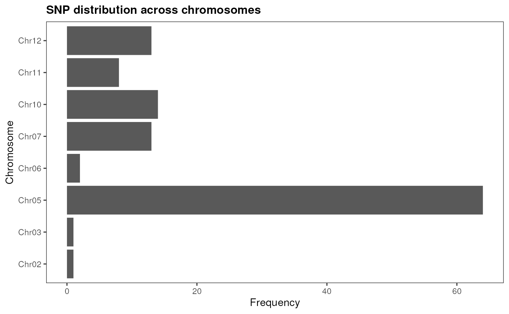
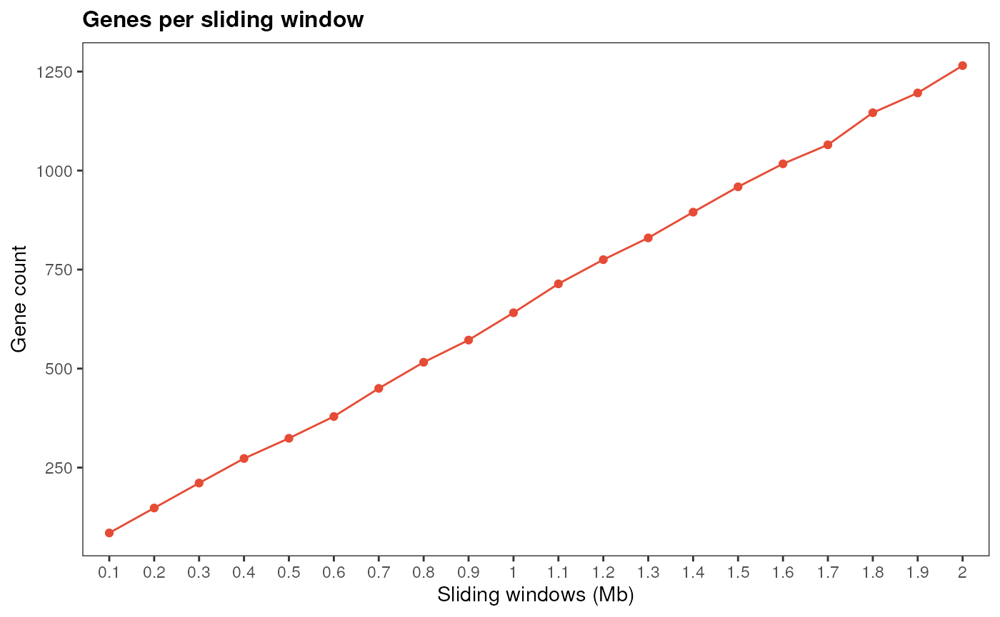

Mining high-confidence candidate genes with cageminer
Fabricio Almeida-Silva
Universidade Estadual do Norte Fluminense Darcy Ribeiro, RJ, BrazilCurrent address: VIB-UGent Center for Plant Systems Biology, Ghent University, Ghent, BelgiumThiago Motta Venancio
Universidade Estadual do Norte Fluminense Darcy Ribeiro, RJ, BrazilSource:
vignettes/cageminer.Rmd
cageminer.RmdIntroduction
Over the past years, RNA-seq data for several species have
accumulated in public repositories. Additionally, genome-wide
association studies (GWAS) have identified SNPs associated with
phenotypes of interest, such as agronomic traits in plants, production
traits in livestock, and complex human diseases. However, although GWAS
can identify SNPs, they cannot identify causative genes associated with
the studied phenotype. The goal of cageminer is to
integrate GWAS-derived SNPs with transcriptomic data to mine candidate
genes and identify high-confidence genes associated with traits of
interest.
Citation
If you use cageminer in your research, please cite us.
You can obtain citation information with
citation('cageminer'), as demonstrated below:
print(citation('cageminer'), bibtex = TRUE)
#>
#> To cite cageminer in publications use:
#>
#> Almeida-Silva, F., & Venancio, T. M. (2022). cageminer: an
#> R/Bioconductor package to prioritize candidate genes by integrating
#> genome-wide association studies and gene coexpression networks. in
#> silico Plants, 4(2), diac018.
#> https://doi.org/10.1093/insilicoplants/diac018
#>
#> A BibTeX entry for LaTeX users is
#>
#> @Article{,
#> title = {cageminer: an R/Bioconductor package to prioritize candidate genes by integrating genome-wide association studies and gene coexpression networks},
#> author = {Fabricio Almeida-Silva and Thiago M. Venancio},
#> journal = {in silico Plants},
#> year = {2022},
#> volume = {4},
#> number = {2},
#> pages = {diac018},
#> url = {https://doi.org/10.1093/insilicoplants/diac018},
#> doi = {10.1093/insilicoplants/diac018},
#> }Installation
if(!requireNamespace('BiocManager', quietly = TRUE))
install.packages('BiocManager')
BiocManager::install("cageminer")Data description
For this vignette, we will use transcriptomic data on pepper (Capsicum annuum) response to Phytophthora root rot (Kim et al. 2018), and GWAS SNPs associated with resistance to Phytophthora root rot from Siddique et al. (2019). To ensure interoperability with other Bioconductor packages, expression data are stored as SummarizedExperiment objects, and gene/SNP positions are stored as GRanges objects.
# GRanges of SNP positions
data(snp_pos)
snp_pos
#> GRanges object with 116 ranges and 0 metadata columns:
#> seqnames ranges strand
#> <Rle> <IRanges> <Rle>
#> 2 Chr02 149068682 *
#> 3 Chr03 5274098 *
#> 4 Chr05 27703815 *
#> 5 Chr05 27761792 *
#> 6 Chr05 27807397 *
#> ... ... ... ...
#> 114 Chr12 230514706 *
#> 115 Chr12 230579178 *
#> 116 Chr12 230812962 *
#> 117 Chr12 230887290 *
#> 118 Chr12 231022812 *
#> -------
#> seqinfo: 8 sequences from an unspecified genome; no seqlengths
# GRanges of chromosome lengths
data(chr_length)
chr_length
#> GRanges object with 12 ranges and 0 metadata columns:
#> seqnames ranges strand
#> <Rle> <IRanges> <Rle>
#> [1] Chr01 1-272704604 *
#> [2] Chr02 1-171128871 *
#> [3] Chr03 1-257900543 *
#> [4] Chr04 1-222584275 *
#> [5] Chr05 1-233468049 *
#> ... ... ... ...
#> [8] Chr08 1-145103255 *
#> [9] Chr09 1-252779264 *
#> [10] Chr10 1-233593809 *
#> [11] Chr11 1-259726002 *
#> [12] Chr12 1-235688241 *
#> -------
#> seqinfo: 12 sequences from an unspecified genome; no seqlengths
# GRanges of gene coordinates
data(gene_ranges)
gene_ranges
#> GRanges object with 30242 ranges and 6 metadata columns:
#> seqnames ranges strand | source type score
#> <Rle> <IRanges> <Rle> | <factor> <factor> <numeric>
#> [1] Chr01 63209-63880 - | PGA1.55 gene NA
#> [2] Chr01 112298-112938 - | PGA1.55 gene NA
#> [3] Chr01 117979-118392 + | PGA1.55 gene NA
#> [4] Chr01 119464-119712 + | PGA1.55 gene NA
#> [5] Chr01 119892-120101 + | PGA1.55 gene NA
#> ... ... ... ... . ... ... ...
#> [30238] Chr12 235631138-235631467 - | PGA1.55 gene NA
#> [30239] Chr12 235642644-235645110 + | PGA1.55 gene NA
#> [30240] Chr12 235645483-235651927 - | PGA1.55 gene NA
#> [30241] Chr12 235652709-235655955 - | PGA1.55 gene NA
#> [30242] Chr12 235663655-235665276 - | PGA1.55 gene NA
#> phase ID Parent
#> <integer> <character> <CharacterList>
#> [1] <NA> CA01g00010
#> [2] <NA> CA01g00020
#> [3] <NA> CA01g00030
#> [4] <NA> CA01g00040
#> [5] <NA> CA01g00050
#> ... ... ... ...
#> [30238] <NA> CA12g22890
#> [30239] <NA> CA12g22900
#> [30240] <NA> CA12g22910
#> [30241] <NA> CA12g22920
#> [30242] <NA> CA12g22930
#> -------
#> seqinfo: 12 sequences from an unspecified genome; no seqlengths
# SummarizedExperiment of pepper response to Phytophthora root rot (RNA-seq)
data(pepper_se)
pepper_se
#> class: SummarizedExperiment
#> dim: 3892 45
#> metadata(0):
#> assays(1): ''
#> rownames(3892): CA02g23440 CA02g05510 ... CA03g35110 CA02g12750
#> rowData names(0):
#> colnames(45): PL1 PL2 ... TMV-P0-3D TMV-P0-Up
#> colData names(1): ConditionVisualizing SNP distribution
Before mining high-confidence candidates, you can visualize the SNP
distribution in the genome to explore possible patterns. First, let’s
see if SNPs are uniformly across chromosomes with
plot_snp_distribution().
plot_snp_distribution(snp_pos)
As we can see, SNPs associated with resistance to Phytophthora root
rot tend to co-occur in chromosome 5. Now, we can see if they are close
to each other in the genome, and if they are located in gene-rich
regions. We can visualize it with plot_snp_circos, which
displays a circos plot of SNPs across chromosomes.
plot_snp_circos(chr_length, gene_ranges, snp_pos)There seems to be no clustering in gene-rich regions, but we can see that SNPs in the same chromosome tend to be physically close to each other.
If you have SNP positions for multiple traits, you need to store them in GRangesList or CompressedGRangesList objects, so each element will have SNP positions for a particular trait. Then, you can visualize their distribution as you would do for a single trait. Let’s simulate multiple traits to see how it works:
# Simulate multiple traits by sampling 20 SNPs 4 times
snp_list <- GenomicRanges::GRangesList(
Trait1 = sample(snp_pos, 20),
Trait2 = sample(snp_pos, 20),
Trait3 = sample(snp_pos, 20),
Trait4 = sample(snp_pos, 20)
)
# Visualize SNP distribution across chromosomes
plot_snp_distribution(snp_list)
# Visualize SNP positions in the genome as a circos plot
plot_snp_circos(chr_length, gene_ranges, snp_list)Algorithm description
The cageminer algorithm identifies high-confidence
candidate genes with 3 steps, which can be interpreted
as 3 sources of evidence:
- Select all genes in a sliding window relative to each SNP as putative candidates.
- Find candidates from step 1 in coexpression modules enriched in guide genes (genes that are known to be associated with the trait of interest).
- Find candidates from step 2 that are correlated with a condition of interest.
These 3 steps can be executed individually (if users want more control on what happens after each step) or all at once.
Step-by-step candidate gene mining
To run the candidate mining step by step, you will need the functions
mine_step1(), mine_step2, and
mine_step3.
Step 1: finding genes close to (or in linkage disequilibrium with) SNPs
The function mine_step1() identifies genes based on step
1 and returns a GRanges object with all putative candidates and their
location in the genome. For that, you need to give 2 GRanges objects as
input, one with the gene coordinates1 and another with the SNP positions.
candidates1 <- mine_step1(gene_ranges, snp_pos)
candidates1
#> GRanges object with 1265 ranges and 6 metadata columns:
#> seqnames ranges strand | source type score
#> <Rle> <IRanges> <Rle> | <factor> <factor> <numeric>
#> [1] Chr02 147076830-147083477 + | PGA1.55 gene NA
#> [2] Chr02 147084450-147086637 - | PGA1.55 gene NA
#> [3] Chr02 147099482-147104002 - | PGA1.55 gene NA
#> [4] Chr02 147126373-147126537 + | PGA1.55 gene NA
#> [5] Chr02 147129897-147132335 - | PGA1.55 gene NA
#> ... ... ... ... . ... ... ...
#> [1261] Chr12 232989761-232990947 - | PGA1.55 gene NA
#> [1262] Chr12 232994658-232999784 + | PGA1.55 gene NA
#> [1263] Chr12 233001307-233004705 + | PGA1.55 gene NA
#> [1264] Chr12 233005539-233011740 - | PGA1.55 gene NA
#> [1265] Chr12 233018159-233022142 - | PGA1.55 gene NA
#> phase ID Parent
#> <integer> <character> <CharacterList>
#> [1] <NA> CA02g16550
#> [2] <NA> CA02g16560
#> [3] <NA> CA02g16570
#> [4] <NA> CA02g16580
#> [5] <NA> CA02g16590
#> ... ... ... ...
#> [1261] <NA> CA12g21190
#> [1262] <NA> CA12g21200
#> [1263] <NA> CA12g21210
#> [1264] <NA> CA12g21220
#> [1265] <NA> CA12g21230
#> -------
#> seqinfo: 12 sequences from an unspecified genome; no seqlengths
length(candidates1)
#> [1] 1265The first step identified 1265 putative candidate genes. By default,
cageminer uses a sliding window of 2 Mb to select putative
candidates2. If you want to visually inspect a
simulation of different sliding windows to choose a different one, you
can use simulate_windows().
# Single trait
simulate_windows(gene_ranges, snp_pos)
# Multiple traits
simulate_windows(gene_ranges, snp_list)
Step 2: finding coexpression modules enriched in guide genes
The function mine_step2() selects candidates in
coexpression modules enriched in guide genes. For that, users must infer
the GCN with the function exp2gcn() from the package BioNERO (Almeida-Silva and Venancio 2021). Guide genes
can be either a character vector of guide gene IDs or a data frame with
gene IDs in the first column and annotation in the second column (useful
if guides are divided in functional categories, for instance). Here,
pepper genes associated with defense-related MapMan bins were retrieved
from PLAZA 3.0 Dicots (Proost et al. 2015)
and used as guides.
The resulting object is a list of two elements:
- candidates: character vector of mined candidate gene IDs.
- enrichment: data frame of enrichment results.
# Load guide genes
data(guides)
head(guides)
#> Gene Description
#> 1 CA10g07770 response to stimulus
#> 2 CA10g07770 response to stress
#> 3 CA10g07770 cellular response to stimulus
#> 4 CA10g07770 cellular response to stress
#> 6 CA10g07770 regulation of cellular response to stress
#> 8 CA10g07770 regulation of response to stimulus
# Infer GCN
sft <- BioNERO::SFT_fit(pepper_se, net_type = "signed", cor_method = "pearson")
#> Warning: executing %dopar% sequentially: no parallel backend registered
#> Power SFT.R.sq slope truncated.R.sq mean.k. median.k. max.k.
#> 1 3 0.000902 0.0985 0.806 718.0 701.00 1060.0
#> 2 4 0.039500 -0.4680 0.833 470.0 451.00 807.0
#> 3 5 0.110000 -0.6540 0.851 322.0 301.00 639.0
#> 4 6 0.269000 -0.9120 0.891 229.0 209.00 520.0
#> 5 7 0.449000 -1.1200 0.920 168.0 149.00 432.0
#> 6 8 0.598000 -1.2900 0.945 126.0 109.00 364.0
#> 7 9 0.685000 -1.4300 0.949 96.8 81.00 311.0
#> 8 10 0.744000 -1.5000 0.961 75.7 61.30 268.0
#> 9 11 0.786000 -1.5800 0.964 60.2 47.00 233.0
#> 10 12 0.817000 -1.6100 0.969 48.5 36.50 204.0
#> 11 13 0.824000 -1.6600 0.966 39.5 28.80 180.0
#> 12 14 0.831000 -1.6900 0.965 32.5 23.00 159.0
#> 13 15 0.846000 -1.7000 0.972 27.1 18.30 142.0
#> 14 16 0.859000 -1.7100 0.976 22.7 14.70 127.0
#> 15 17 0.869000 -1.7200 0.981 19.2 11.90 115.0
#> 16 18 0.877000 -1.7200 0.984 16.3 9.76 103.0
#> 17 19 0.882000 -1.7200 0.986 14.0 7.97 93.7
#> 18 20 0.889000 -1.7100 0.988 12.0 6.63 85.2
gcn <- BioNERO::exp2gcn(pepper_se, net_type = "signed", cor_method = "pearson",
module_merging_threshold = 0.8, SFTpower = sft$power)
#> ..connectivity..
#> ..matrix multiplication (system BLAS)..
#> ..normalization..
#> ..done.
# Apply step 2
candidates2 <- mine_step2(pepper_se, gcn = gcn, guides = guides$Gene,
candidates = candidates1$ID)
#> Enrichment analysis for module brown...
#> Enrichment analysis for module cyan...
#> Enrichment analysis for module darkgreen...
#> Enrichment analysis for module darkmagenta...
#> Enrichment analysis for module darkolivegreen...
#> Enrichment analysis for module darkorange...
#> Enrichment analysis for module darkorange2...
#> Enrichment analysis for module darkred...
#> Enrichment analysis for module darkturquoise...
#> Enrichment analysis for module green...
#> Enrichment analysis for module grey60...
#> Enrichment analysis for module ivory...
#> Enrichment analysis for module lightcyan...
#> Enrichment analysis for module midnightblue...
#> Enrichment analysis for module orange...
#> Enrichment analysis for module orangered4...
#> Enrichment analysis for module paleturquoise...
#> Enrichment analysis for module pink...
#> Enrichment analysis for module red...
#> Enrichment analysis for module royalblue...
#> Enrichment analysis for module salmon...
#> Enrichment analysis for module steelblue...
#> Enrichment analysis for module violet...
candidates2$candidates
#> [1] "CA10g08490" "CA03g01790" "CA10g12640" "CA12g21230" "CA10g02810"
#> [6] "CA03g01800" "CA02g17460" "CA10g02800" "CA03g03320" "CA05g14230"
#> [11] "CA07g04010" "CA05g06480" "CA03g02720" "CA10g02630" "CA12g18010"
#> [16] "CA07g04000" "CA02g16570" "CA10g02570" "CA05g15120" "CA02g16830"
#> [21] "CA12g18440" "CA12g18400" "CA10g02780" "CA07g12720" "CA03g01900"
#> [26] "CA12g07460" "CA03g02360" "CA02g16620" "CA10g08420" "CA03g02960"
#> [31] "CA03g03010" "CA05g15110" "CA02g16550" "CA05g14730" "CA02g16900"
#> [36] "CA03g03310" "CA02g17030"
candidates2$enrichment
#> TermID genes all pval padj
#> 1 guide 323 1303 2.575418e-05 5.150837e-05
#> GeneID
#> 1 CA01g00320,CA01g00480,CA01g00740,CA01g01120,CA01g01470,CA01g03330,CA01g03580,CA01g05790,CA01g06190,CA01g07040,CA01g09730,CA01g10140,CA01g11400,CA01g12830,CA01g12840,CA01g15970,CA01g18200,CA01g19830,CA01g25570,CA01g25740,CA01g26380,CA01g27330,CA01g27360,CA01g27650,CA01g28500,CA01g30510,CA01g31330,CA01g34470,CA02g00280,CA02g00310,CA02g00560,CA02g00910,CA02g01560,CA02g03350,CA02g04110,CA02g06320,CA02g07440,CA02g09140,CA02g09790,CA02g11350,CA02g13810,CA02g14640,CA02g14910,CA02g15330,CA02g15540,CA02g15860,CA02g16550,CA02g17460,CA02g18810,CA02g19190,CA02g19740,CA02g20130,CA02g20570,CA02g21070,CA02g22080,CA02g23440,CA02g23570,CA02g24110,CA02g24270,CA02g24340,CA02g25080,CA02g25100,CA02g25180,CA02g25570,CA02g28850,CA02g29330,CA02g29530,CA02g29590,CA03g01500,CA03g01790,CA03g01900,CA03g03310,CA03g03320,CA03g03750,CA03g04210,CA03g04230,CA03g05850,CA03g05910,CA03g06690,CA03g07210,CA03g07300,CA03g07750,CA03g07870,CA03g08860,CA03g09290,CA03g10040,CA03g10360,CA03g15850,CA03g15860,CA03g17560,CA03g19350,CA03g19580,CA03g20380,CA03g22730,CA03g22790,CA03g23510,CA03g23630,CA03g28400,CA03g28670,CA03g29180,CA03g29760,CA03g30020,CA03g30250,CA03g30650,CA03g30690,CA03g31030,CA03g31190,CA03g32600,CA03g33190,CA03g34100,CA03g34590,CA03g35130,CA03g35140,CA03g35590,CA03g35890,CA03g36980,CA04g00240,CA04g00730,CA04g03470,CA04g04090,CA04g05900,CA04g05970,CA04g07310,CA04g07760,CA04g08090,CA04g08220,CA04g08650,CA04g09320,CA04g11150,CA04g11250,CA04g14010,CA04g14020,CA04g14160,CA04g16180,CA04g16450,CA04g17220,CA04g17860,CA04g17920,CA04g19080,CA04g19680,CA04g20890,CA04g23480,CA05g03260,CA05g03360,CA05g03470,CA05g04410,CA05g04830,CA05g05240,CA05g06480,CA05g07240,CA05g07870,CA05g12470,CA05g13460,CA05g14230,CA05g14730,CA05g16560,CA05g17560,CA05g18750,CA05g20780,CA05g20790,CA06g00050,CA06g00060,CA06g00470,CA06g00480,CA06g02280,CA06g03050,CA06g06240,CA06g06260,CA06g06270,CA06g06990,CA06g09410,CA06g10200,CA06g11310,CA06g14270,CA06g14290,CA06g15240,CA06g17350,CA06g17500,CA06g17520,CA06g18860,CA06g19250,CA06g19490,CA06g20530,CA06g21320,CA06g22410,CA06g25350,CA06g25930,CA06g25940,CA06g26650,CA06g28010,CA07g00490,CA07g04410,CA07g04890,CA07g05830,CA07g06700,CA07g06720,CA07g07840,CA07g08630,CA07g11190,CA07g11250,CA07g12720,CA07g13050,CA07g13240,CA07g14400,CA07g14430,CA07g14630,CA07g16060,CA07g16510,CA07g17050,CA07g19020,CA07g19710,CA07g20230,CA07g20250,CA07g20800,CA08g00690,CA08g02960,CA08g04480,CA08g06250,CA08g06530,CA08g06650,CA08g08240,CA08g09820,CA08g10190,CA08g10220,CA08g10230,CA08g10860,CA08g10920,CA08g11610,CA08g11620,CA08g11900,CA08g11980,CA08g12160,CA08g12450,CA08g12660,CA08g13240,CA08g13340,CA08g13350,CA08g13510,CA08g14480,CA08g15500,CA08g15610,CA08g15620,CA08g15740,CA08g15900,CA08g16410,CA08g17710,CA08g18790,CA08g19220,CA08g19480,CA09g01030,CA09g02170,CA09g02410,CA09g02420,CA09g02430,CA09g03530,CA09g04530,CA09g05970,CA09g08100,CA09g14690,CA09g17240,CA09g18730,CA10g04080,CA10g04720,CA10g06450,CA10g08490,CA10g08530,CA10g09720,CA10g10440,CA10g10590,CA10g10660,CA10g11170,CA10g11770,CA10g12380,CA10g14090,CA10g14270,CA10g14530,CA10g14540,CA10g14560,CA10g14760,CA10g16030,CA10g17530,CA10g17910,CA10g18580,CA10g19040,CA10g19490,CA10g20200,CA10g20510,CA10g21570,CA10g21770,CA10g22350,CA11g00060,CA11g00180,CA11g00430,CA11g00650,CA11g02330,CA11g04780,CA11g07880,CA11g07920,CA11g07980,CA11g09720,CA11g10980,CA11g17670,CA11g19120,CA11g19600,CA12g00120,CA12g00940,CA12g03110,CA12g04970,CA12g07010,CA12g09850,CA12g10090,CA12g10170,CA12g10200,CA12g10670,CA12g14680,CA12g15570,CA12g16290,CA12g18010,CA12g18900,CA12g19270,CA12g21600,CA12g22660,CA12g22930
#> Module
#> 1 cyanAfter the step 2, we got 37 candidates.
Step 3: finding genes with altered expression in a condition of interest
The function mine_step3() identifies candidate genes
whose expression levels significantly increase or decrease in a
particular condition. For that, you need to specify what level from the
sample metadata corresponds to this condition. The resulting object from
mine_step3() is a data frame with mined candidates and
their correlation to the condition of interest.
# See the levels from the sample metadata
unique(pepper_se$Condition)
#> [1] "Placenta" "Pericarp" "PRR_control" "PRR_stress"
#> [5] "virus_control" "PepMov_stress" "TMV"
# Apply step 3 using "PRR_stress" as the condition of interest
candidates3 <- mine_step3(pepper_se, candidates = candidates2$candidates,
sample_group = "PRR_stress")
candidates3
#> gene trait cor pvalue
#> 243 CA12g18400 PRR_stress 0.5963394 1.540534e-05
#> 187 CA10g02780 PRR_stress 0.3201048 3.205995e-02
#> 19 CA02g16620 PRR_stress 0.3113993 3.732128e-02
#> 33 CA02g16900 PRR_stress -0.3204388 3.187100e-02
#> 103 CA03g03310 PRR_stress -0.3983772 6.720204e-03Finally, we got 5 high-confidence candidate genes associated with resistance to Phytophthora root rot. Genes with negative correlation coefficients to the condition can be interpreted as having significantly reduced expression in this condition, while genes with positive correlation coefficients have significantly increased expression in this condition.
Automatic candidate gene mining
Alternatively, if you are not interested in inspecting the results
after each step, you can get to the same results from the previous
section with a single step by using the function
mine_candidates(). This function is a wrapper that calls
mine_step1(), sends the results to
mine_step2(), and then it sends the results from
mine_step2() to mine_step3().
candidates <- mine_candidates(gene_ranges = gene_ranges,
marker_ranges = snp_pos,
exp = pepper_se,
gcn = gcn, guides = guides$Gene,
sample_group = "PRR_stress")
#> Enrichment analysis for module brown...
#> Enrichment analysis for module cyan...
#> Enrichment analysis for module darkgreen...
#> Enrichment analysis for module darkmagenta...
#> Enrichment analysis for module darkolivegreen...
#> Enrichment analysis for module darkorange...
#> Enrichment analysis for module darkorange2...
#> Enrichment analysis for module darkred...
#> Enrichment analysis for module darkturquoise...
#> Enrichment analysis for module green...
#> Enrichment analysis for module grey60...
#> Enrichment analysis for module ivory...
#> Enrichment analysis for module lightcyan...
#> Enrichment analysis for module midnightblue...
#> Enrichment analysis for module orange...
#> Enrichment analysis for module orangered4...
#> Enrichment analysis for module paleturquoise...
#> Enrichment analysis for module pink...
#> Enrichment analysis for module red...
#> Enrichment analysis for module royalblue...
#> Enrichment analysis for module salmon...
#> Enrichment analysis for module steelblue...
#> Enrichment analysis for module violet...
candidates
#> gene trait cor pvalue
#> 243 CA12g18400 PRR_stress 0.5963394 1.540534e-05
#> 187 CA10g02780 PRR_stress 0.3201048 3.205995e-02
#> 19 CA02g16620 PRR_stress 0.3113993 3.732128e-02
#> 33 CA02g16900 PRR_stress -0.3204388 3.187100e-02
#> 103 CA03g03310 PRR_stress -0.3983772 6.720204e-03Score candidates
In some cases, you might have more high-confidence candidates than
you expected, and you want to pick only the top n genes for
validation, for instance. In this scenario, you need to assign scores to
your mined candidates to pick the top n genes with the highest
scores. The function score_genes() does that by using the
formula below:
\[S_i = r_{pb} \kappa\]
where:
\(\kappa\) = 2 if the gene encodes a transcription factor
\(\kappa\) = 2 if the gene is a hub
\(\kappa\) = 3 if the gene encodes a hub transcription factor
\(\kappa\) = 1 if none of the conditions above are true
By default, score_genes picks the top 10 candidates. If
there are less than 10 candidates, it will return all candidates sorted
by scores. Here, TFs were obtained from PlantTFDB 4.0 (Jin et al. 2017). Hub genes can be identified
with the function get_hubs_gcn() from the package
BioNERO.
# Load TFs
data(tfs)
head(tfs)
#> Gene_ID Family
#> 1 CA12g20650 RAV
#> 2 CA00g00130 WRKY
#> 3 CA00g00230 WRKY
#> 4 CA00g00390 LBD
#> 5 CA00g03050 NAC
#> 6 CA00g07140 E2F/DP
# Get GCN hubs
hubs <- BioNERO::get_hubs_gcn(pepper_se, gcn)
head(hubs)
#> Gene Module kWithin
#> 1 CA02g16370 brown 36.54361
#> 2 CA11g18340 brown 36.49363
#> 3 CA06g01660 brown 36.35147
#> 4 CA02g18750 brown 34.79498
#> 5 CA11g18360 brown 34.01593
#> 6 CA12g07260 brown 33.73551
# Score candidates
scored <- score_genes(candidates, hubs$Gene, tfs$Gene_ID)
#> Number of genes < 'pick_top'. Picking all genes.
scored
#> gene trait cor pvalue score
#> 243 CA12g18400 PRR_stress 0.5963394 1.540534e-05 0.5963394
#> 103 CA03g03310 PRR_stress -0.3983772 6.720204e-03 -0.3983772
#> 33 CA02g16900 PRR_stress -0.3204388 3.187100e-02 -0.3204388
#> 187 CA10g02780 PRR_stress 0.3201048 3.205995e-02 0.3201048
#> 19 CA02g16620 PRR_stress 0.3113993 3.732128e-02 0.3113993As none of the mined candidates are hubs or encode transcription factors, their scores are simply their correlation coefficients with the condition of interest.
Session information
This document was created under the following conditions:
sessioninfo::session_info()
#> ─ Session info ───────────────────────────────────────────────────────────────
#> setting value
#> version R version 4.2.1 (2022-06-23)
#> os Ubuntu 20.04.4 LTS
#> system x86_64, linux-gnu
#> ui X11
#> language en
#> collate en_US.UTF-8
#> ctype en_US.UTF-8
#> tz UTC
#> date 2023-03-14
#> pandoc 2.18 @ /usr/local/bin/ (via rmarkdown)
#>
#> ─ Packages ───────────────────────────────────────────────────────────────────
#> package * version date (UTC) lib source
#> abind 1.4-5 2016-07-21 [1] RSPM (R 4.2.0)
#> annotate 1.74.0 2022-04-26 [1] Bioconductor
#> AnnotationDbi 1.58.0 2022-04-26 [1] Bioconductor
#> AnnotationFilter 1.20.0 2022-04-26 [1] Bioconductor
#> backports 1.4.1 2021-12-13 [1] RSPM (R 4.2.0)
#> base64enc 0.1-3 2015-07-28 [2] CRAN (R 4.2.0)
#> Biobase 2.56.0 2022-04-26 [1] Bioconductor
#> BiocFileCache 2.4.0 2022-04-26 [1] Bioconductor
#> BiocGenerics 0.42.0 2022-04-26 [1] Bioconductor
#> BiocIO 1.6.0 2022-04-26 [1] Bioconductor
#> BiocManager 1.30.20 2023-02-24 [1] RSPM (R 4.2.0)
#> BiocParallel 1.30.4 2022-10-11 [1] Bioconductor
#> BiocStyle * 2.24.0 2022-04-26 [1] Bioconductor
#> biomaRt 2.52.0 2022-04-26 [1] Bioconductor
#> BioNERO 1.4.2 2022-09-04 [1] Bioconductor
#> Biostrings 2.64.1 2022-08-18 [1] Bioconductor
#> biovizBase 1.44.0 2022-04-26 [1] Bioconductor
#> bit 4.0.5 2022-11-15 [1] RSPM (R 4.2.0)
#> bit64 4.0.5 2020-08-30 [1] CRAN (R 4.2.0)
#> bitops 1.0-7 2021-04-24 [1] CRAN (R 4.2.0)
#> blob 1.2.3 2022-04-10 [1] CRAN (R 4.2.0)
#> bookdown 0.33 2023-03-06 [1] RSPM (R 4.2.0)
#> BSgenome 1.64.0 2022-04-26 [1] Bioconductor
#> bslib 0.4.2 2022-12-16 [2] RSPM (R 4.2.0)
#> cachem 1.0.7 2023-02-24 [2] RSPM (R 4.2.0)
#> cageminer * 1.5.0 2023-03-14 [1] Bioconductor
#> checkmate 2.1.0 2022-04-21 [1] RSPM (R 4.2.0)
#> circlize 0.4.15 2022-05-10 [1] RSPM (R 4.2.0)
#> cli 3.6.0 2023-01-09 [2] RSPM (R 4.2.0)
#> clue 0.3-64 2023-01-31 [1] RSPM (R 4.2.0)
#> cluster 2.1.4 2022-08-22 [3] RSPM (R 4.2.0)
#> coda 0.19-4 2020-09-30 [1] RSPM (R 4.2.0)
#> codetools 0.2-19 2023-02-01 [3] RSPM (R 4.2.0)
#> colorspace 2.1-0 2023-01-23 [1] RSPM (R 4.2.0)
#> commonmark 1.8.1 2022-10-14 [2] RSPM (R 4.2.0)
#> ComplexHeatmap 2.12.1 2022-08-09 [1] Bioconductor
#> crayon 1.5.2 2022-09-29 [2] RSPM (R 4.2.0)
#> curl 5.0.0 2023-01-12 [2] RSPM (R 4.2.0)
#> data.table 1.14.8 2023-02-17 [1] RSPM (R 4.2.0)
#> DBI 1.1.3 2022-06-18 [1] RSPM (R 4.2.0)
#> dbplyr 2.3.1 2023-02-24 [1] RSPM (R 4.2.0)
#> DelayedArray 0.22.0 2022-04-26 [1] Bioconductor
#> desc 1.4.2 2022-09-08 [2] RSPM (R 4.2.0)
#> dichromat 2.0-0.1 2022-05-02 [1] RSPM (R 4.2.0)
#> digest 0.6.31 2022-12-11 [2] RSPM (R 4.2.0)
#> doParallel 1.0.17 2022-02-07 [1] RSPM (R 4.2.0)
#> dplyr 1.1.0 2023-01-29 [1] RSPM (R 4.2.0)
#> dynamicTreeCut 1.63-1 2016-03-11 [1] RSPM (R 4.2.0)
#> edgeR 3.38.4 2022-08-07 [1] Bioconductor
#> ellipsis 0.3.2 2021-04-29 [2] CRAN (R 4.2.0)
#> ensembldb 2.20.2 2022-06-16 [1] Bioconductor
#> evaluate 0.20 2023-01-17 [2] RSPM (R 4.2.0)
#> fansi 1.0.4 2023-01-22 [2] RSPM (R 4.2.0)
#> farver 2.1.1 2022-07-06 [1] RSPM (R 4.2.0)
#> fastcluster 1.2.3 2021-05-24 [1] RSPM (R 4.2.0)
#> fastmap 1.1.1 2023-02-24 [2] RSPM (R 4.2.0)
#> filelock 1.0.2 2018-10-05 [1] CRAN (R 4.2.0)
#> foreach 1.5.2 2022-02-02 [1] RSPM (R 4.2.0)
#> foreign 0.8-84 2022-12-06 [3] RSPM (R 4.2.0)
#> Formula 1.2-5 2023-02-24 [1] RSPM (R 4.2.0)
#> fs 1.6.1 2023-02-06 [2] RSPM (R 4.2.0)
#> genefilter 1.78.0 2022-04-26 [1] Bioconductor
#> generics 0.1.3 2022-07-05 [1] RSPM (R 4.2.0)
#> GENIE3 1.18.0 2022-04-26 [1] Bioconductor
#> GenomeInfoDb 1.32.4 2022-09-06 [1] Bioconductor
#> GenomeInfoDbData 1.2.8 2022-05-02 [1] Bioconductor
#> GenomicAlignments 1.32.1 2022-07-24 [1] Bioconductor
#> GenomicFeatures 1.48.4 2022-09-20 [1] Bioconductor
#> GenomicRanges 1.48.0 2022-04-26 [1] Bioconductor
#> GetoptLong 1.0.5 2020-12-15 [1] RSPM (R 4.2.0)
#> GGally 2.1.2 2021-06-21 [1] RSPM (R 4.2.0)
#> ggbio 1.44.1 2022-06-23 [1] Bioconductor
#> ggnetwork 0.5.12 2023-03-06 [1] RSPM (R 4.2.0)
#> ggnewscale 0.4.8 2022-10-06 [1] RSPM (R 4.2.0)
#> ggplot2 3.4.1 2023-02-10 [1] RSPM (R 4.2.0)
#> ggrepel 0.9.3 2023-02-03 [1] RSPM (R 4.2.0)
#> ggtext 0.1.2 2022-09-16 [1] RSPM (R 4.2.0)
#> GlobalOptions 0.1.2 2020-06-10 [1] CRAN (R 4.2.0)
#> glue 1.6.2 2022-02-24 [2] CRAN (R 4.2.0)
#> GO.db 3.15.0 2022-04-11 [1] Bioconductor
#> graph 1.74.0 2022-04-26 [1] Bioconductor
#> gridExtra 2.3 2017-09-09 [1] CRAN (R 4.2.0)
#> gridtext 0.1.5 2022-09-16 [1] RSPM (R 4.2.0)
#> gtable 0.3.1 2022-09-01 [1] RSPM (R 4.2.0)
#> highr 0.10 2022-12-22 [2] RSPM (R 4.2.0)
#> Hmisc 5.0-1 2023-03-08 [1] RSPM (R 4.2.0)
#> hms 1.1.2 2022-08-19 [1] RSPM (R 4.2.0)
#> htmlTable 2.4.1 2022-07-07 [1] RSPM (R 4.2.0)
#> htmltools 0.5.4 2022-12-07 [2] RSPM (R 4.2.0)
#> htmlwidgets 1.6.1 2023-01-07 [2] RSPM (R 4.2.0)
#> httr 1.4.5 2023-02-24 [2] RSPM (R 4.2.0)
#> igraph 1.4.1 2023-02-24 [1] RSPM (R 4.2.0)
#> impute 1.70.0 2022-04-26 [1] Bioconductor
#> intergraph 2.0-2 2016-12-05 [1] RSPM (R 4.2.0)
#> IRanges 2.30.1 2022-08-18 [1] Bioconductor
#> iterators 1.0.14 2022-02-05 [1] RSPM (R 4.2.0)
#> jquerylib 0.1.4 2021-04-26 [2] CRAN (R 4.2.0)
#> jsonlite 1.8.4 2022-12-06 [2] RSPM (R 4.2.0)
#> KEGGREST 1.36.3 2022-07-12 [1] Bioconductor
#> knitr 1.42 2023-01-25 [2] RSPM (R 4.2.0)
#> labeling 0.4.2 2020-10-20 [1] CRAN (R 4.2.0)
#> lattice 0.20-45 2021-09-22 [3] CRAN (R 4.2.1)
#> lazyeval 0.2.2 2019-03-15 [1] CRAN (R 4.2.0)
#> lifecycle 1.0.3 2022-10-07 [2] RSPM (R 4.2.0)
#> limma 3.52.4 2022-09-27 [1] Bioconductor
#> locfit 1.5-9.7 2023-01-02 [1] RSPM (R 4.2.0)
#> magrittr 2.0.3 2022-03-30 [2] CRAN (R 4.2.0)
#> markdown 1.5 2023-01-31 [1] RSPM (R 4.2.0)
#> Matrix 1.5-3 2022-11-11 [3] RSPM (R 4.2.0)
#> MatrixGenerics 1.8.1 2022-06-26 [1] Bioconductor
#> matrixStats 0.63.0 2022-11-18 [1] RSPM (R 4.2.0)
#> memoise 2.0.1 2021-11-26 [2] CRAN (R 4.2.0)
#> mgcv 1.8-42 2023-03-02 [3] RSPM (R 4.2.0)
#> minet 3.54.0 2022-04-26 [1] Bioconductor
#> munsell 0.5.0 2018-06-12 [1] CRAN (R 4.2.0)
#> NetRep 1.2.6 2023-01-06 [1] RSPM (R 4.2.0)
#> network 1.18.1 2023-01-24 [1] RSPM (R 4.2.0)
#> networkD3 0.4 2017-03-18 [1] RSPM (R 4.2.0)
#> nlme 3.1-162 2023-01-31 [3] RSPM (R 4.2.0)
#> nnet 7.3-18 2022-09-28 [3] RSPM (R 4.2.0)
#> OrganismDbi 1.38.1 2022-06-16 [1] Bioconductor
#> patchwork 1.1.2 2022-08-19 [1] RSPM (R 4.2.0)
#> pillar 1.8.1 2022-08-19 [2] RSPM (R 4.2.0)
#> pkgconfig 2.0.3 2019-09-22 [2] CRAN (R 4.2.0)
#> pkgdown 2.0.7 2022-12-14 [2] RSPM (R 4.2.0)
#> plyr 1.8.8 2022-11-11 [1] RSPM (R 4.2.0)
#> png 0.1-8 2022-11-29 [1] RSPM (R 4.2.0)
#> preprocessCore 1.58.0 2022-04-26 [1] Bioconductor
#> prettyunits 1.1.1 2020-01-24 [2] CRAN (R 4.2.0)
#> progress 1.2.2 2019-05-16 [1] CRAN (R 4.2.0)
#> ProtGenerics 1.28.0 2022-04-26 [1] Bioconductor
#> purrr 1.0.1 2023-01-10 [2] RSPM (R 4.2.0)
#> R6 2.5.1 2021-08-19 [2] CRAN (R 4.2.0)
#> ragg 1.2.5 2023-01-12 [2] RSPM (R 4.2.0)
#> rappdirs 0.3.3 2021-01-31 [2] CRAN (R 4.2.0)
#> RBGL 1.72.0 2022-04-26 [1] Bioconductor
#> RColorBrewer 1.1-3 2022-04-03 [1] CRAN (R 4.2.0)
#> Rcpp 1.0.10 2023-01-22 [2] RSPM (R 4.2.0)
#> RCurl 1.98-1.10 2023-01-27 [1] RSPM (R 4.2.0)
#> reshape 0.8.9 2022-04-12 [1] RSPM (R 4.2.0)
#> reshape2 1.4.4 2020-04-09 [1] CRAN (R 4.2.0)
#> restfulr 0.0.15 2022-06-16 [1] RSPM (R 4.2.0)
#> RhpcBLASctl 0.23-42 2023-02-11 [1] RSPM (R 4.2.0)
#> rjson 0.2.21 2022-01-09 [1] CRAN (R 4.2.0)
#> rlang 1.0.6 2022-09-24 [2] RSPM (R 4.2.0)
#> rmarkdown 2.20 2023-01-19 [2] RSPM (R 4.2.0)
#> rpart 4.1.19 2022-10-21 [3] RSPM (R 4.2.0)
#> rprojroot 2.0.3 2022-04-02 [2] CRAN (R 4.2.0)
#> Rsamtools 2.12.0 2022-04-26 [1] Bioconductor
#> RSQLite 2.3.0 2023-02-17 [1] RSPM (R 4.2.0)
#> rstudioapi 0.14 2022-08-22 [2] RSPM (R 4.2.0)
#> rtracklayer 1.56.1 2022-06-23 [1] Bioconductor
#> S4Vectors 0.34.0 2022-04-26 [1] Bioconductor
#> sass 0.4.5 2023-01-24 [2] RSPM (R 4.2.0)
#> scales 1.2.1 2022-08-20 [1] RSPM (R 4.2.0)
#> sessioninfo 1.2.2 2021-12-06 [2] RSPM (R 4.2.0)
#> shape 1.4.6 2021-05-19 [1] CRAN (R 4.2.0)
#> statmod 1.5.0 2023-01-06 [1] RSPM (R 4.2.0)
#> statnet.common 4.8.0 2023-01-24 [1] RSPM (R 4.2.0)
#> stringi 1.7.12 2023-01-11 [2] RSPM (R 4.2.0)
#> stringr 1.5.0 2022-12-02 [2] RSPM (R 4.2.0)
#> SummarizedExperiment 1.26.1 2022-04-29 [1] Bioconductor
#> survival 3.5-5 2023-03-12 [3] RSPM (R 4.2.0)
#> sva 3.44.0 2022-04-26 [1] Bioconductor
#> systemfonts 1.0.4 2022-02-11 [2] RSPM (R 4.2.0)
#> textshaping 0.3.6 2021-10-13 [2] RSPM (R 4.2.0)
#> tibble 3.2.0 2023-03-08 [2] RSPM (R 4.2.0)
#> tidyselect 1.2.0 2022-10-10 [1] RSPM (R 4.2.0)
#> utf8 1.2.3 2023-01-31 [2] RSPM (R 4.2.0)
#> VariantAnnotation 1.42.1 2022-05-15 [1] Bioconductor
#> vctrs 0.5.2 2023-01-23 [2] RSPM (R 4.2.0)
#> WGCNA 1.72-1 2023-01-18 [1] RSPM (R 4.2.1)
#> withr 2.5.0 2022-03-03 [2] CRAN (R 4.2.0)
#> xfun 0.37 2023-01-31 [2] RSPM (R 4.2.0)
#> XML 3.99-0.13 2022-12-04 [1] RSPM (R 4.2.0)
#> xml2 1.3.3 2021-11-30 [2] CRAN (R 4.2.0)
#> xtable 1.8-4 2019-04-21 [2] CRAN (R 4.2.0)
#> XVector 0.36.0 2022-04-26 [1] Bioconductor
#> yaml 2.3.7 2023-01-23 [2] RSPM (R 4.2.0)
#> zlibbioc 1.42.0 2022-04-26 [1] Bioconductor
#>
#> [1] /__w/_temp/Library
#> [2] /usr/local/lib/R/site-library
#> [3] /usr/local/lib/R/library
#>
#> ──────────────────────────────────────────────────────────────────────────────